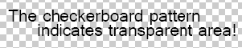
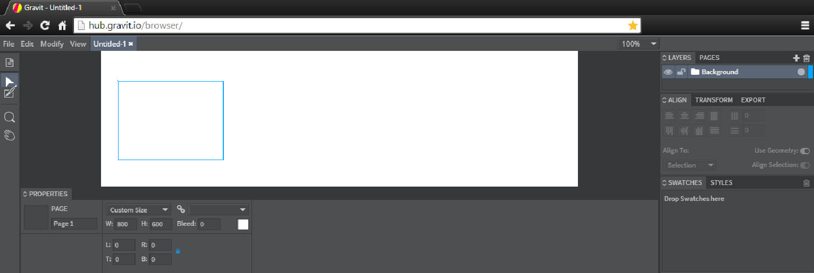

Now that we’ve looked at the intricacies of HTML, it’s time to explore the last few finicky tags you’ll definitely need in your quest to populate the web with your ponderings, as well as a couple of new concepts and a thoughtful look further.
When adding content to your website, you’re going to want to add media elements, as multi-modality almost always bolstersto keep people engaged with interaction, so it's not just a static pool of information user-experience. You’ll also want to cast a semantic net over certain parts of your content sometimes, to group them together. Sally forth!
| HTML of the future is incorporating lots of exciting new elements (both literally and figuratively). |
| These elements take advantage of file-formats to improve presentation and interactivity. |
On the surface, structurally grouping your content has no visual effect. However, it does allow you get very specific- by doing this, you can target your own content with stylesheets and with scripts. At tag-level, you can do this by providing them with ids and classes, however if we’re thinking bigwe’re always thinking big, div and span tags can be used to capture content, to provide an underlying framework for interactivity once the other building blocks come together.
'Divsshort for ‘divisions’' are used for block-level tags, and 'spans' are used for inline-elements. This is an exercise in customisation, as you’ll determine yourself where, what and when to take advantage of these constructs- and it’s always good to plan ahead.
Getting all meta for a moment, in this page I wrap the content blocks in individual 'div' tags, for a level of separation that not only helps meand the markers (*wink wink*) traverse the code, but also allows me to provide specific unique styling to certain bits. Additionally, if you have a slew of linked text, you may want to put it inside of a span, as if you ever need to mess with that particular bit then it’s enclosed and easily accessible.
Let’s talk more about classes. At the moment, oddly, they serve as a bit of a placeholder for thingscss to come. You’d class an element as something because it fits into a specific category- this, like ‘ids’, allows you to more accurately single it out in code later.
To make this more relatable, say you wrote a script that would siphon all person-names from a page: you may then write something to the tune of <span class=”person”>Chris Sawyer</span>. Okay, running with that, let’s tangentially say that we only want to extract names from a specific area of the page- you could wrap that section in a ‘div’ like so: <div id=”name-area”>elements</div>, which could define a scope of operation.
Note: classes should be used when you want multiple elements to be grouped as such or abide by a rule, identifiers should be unique, occuring only once.
This is a fun one- I hope you’re excited. Life without anything artistic is seldom interesting, so it’s no surprise that the nicest websites you’ve visited have, without a doubt, been full of pictures and the likesknown as 'rich content'. The rule of thumb is that browsers mightn’t support anything more than text as law, however most still provide native support- HTML5 is pushing for an expansion of this native support to cover video, and even eventually rendering of formats such as OpenGL.
Time to get hipster up in here: this is going to feel very similar to the ‘links’ section on the previous page, insomuch as to create a fully-fleshed image you must make an <image> tag, tell it to point to something, and then if necessary add extra descriptive information:
<img src=”images/sections/html/artsy.jpeg" alt=”An artsy photograph.” title=”#nofilter” width=”600” height=”400” />
This produces the image shown in this div. Alt provides some text to display should the picture fail to link correctly:
Title generally provides extra information on-hover, which is sometimes helpful. As you can see, the height and width can also be specified.
Let’s take a scenic foray into the world of image-file-formats. It’s useful to know how certain embedded medias will work in your website to determine which is the most appropriate to use. The legendary ‘.gifgraphics interchange format, introduced by 'compuserve' in 1987’, although incredibly portable and animated, is being phased out in favour of formats such as ‘webm’, which provide higher quality at a smallerthe best of both worlds! size.
The hardy JPEG is a solid all-rounder, as you can compress hugely without losing any quality; however, my favourite is the PNG, and like any favourite, it’s about to get some special attention..
If file formats had a superhero origin story, this one’d get the best critic-score. The original specification was authored by an ad-hoc group of computer graphics experts and enthusiasts, who convened exclusively via e-mail. There’s also an extension to png that allows it to animate. Spectacular!
The '.pngportable network graphic' came as a result of the GIF’s patent-problems- this file format is free to use, supports losslesswith less artefacts than jpeg compression, and a full-color palette with an optional alpha channel, meaning there can be transparent areas! So, super high quality, super useful, and super free- *ding* *ding* *ding*.
Interestingly, the web is becoming less about the information presented and more about what you can do with this information- delivering online, in-client applications that allow users to generate their own content. Virtual, cloud-based software such as 'Gravit' by 'Quasado' actually provides the user with an interactive space that rivals traditional software! I'm employing a lot of buzz-words here, but they aren't hollow.

Brandon Satrom described HTML5 eloquently on his post on the developer forums at Microsoft: "You might have discovered by now that HTML5 means different things to different people. To some, it just means new tags like 'header' and 'footer' and a handful of new attributes available in markup. To others, it means everything that’s new and interesting on the Web, including technologies implemented in just a single browser or other specifications not officially part of HTML5. To be sure, understanding the real meaning of HTML5 is often the first roadblock many of us face.
And, honestly, there’s some justification for the number of varying definitions. HTML5 is huge! Formally defined by an international standards body known as the World Wide Web Consortium (W3C), HTML5 consists of more than 100 specifications that relate to the next generation of Web technologies. By putting all 100-plus of these specifications under the moniker HTML5, you could argue that the W3C oversimplified things. And while it’s hard to take something as broad as HTML5 and define it in an unambiguous way, I believe that the W3C was trying to address the scope of what’s changing on the Web by introducing HTML5 as a unifying concept for that change.".
Clearly, this shift in overall attitude to what should be part of the web is changing- increasingly, we're able to forego programming in favour of an almost recursive display of app-creation- by creating an application for HTML5, in an in-browser application made in HTML5. It's like getting 3D printers to print more 3D printers!
No other initialism is currently met with such reverence as ‘HTML5’. HTML5 heralds a new dawn. New opportunities. New new-ness.
But seriously, with HTML5 becoming the benchmarkcatch up, microsoft, you dingbats for web-development, it’s making it ever-increasingly simple to include extra media in your websites. Things such as ‘video’ and ‘canvas’ elements provide a more specific approach to replace the now inconvenient ‘object’ and ‘embed’ tags- they require less specification and adjustment to work out of the box.
The future is exciting, no?
This cube is special, and it mightn't be apparent why, at first. This cube is being rendered in 3d, in real-time, in-browser! It's using a javascript plugin that takes advantage of 'webGL', and although this is simple, the applications are astronomically exciting.